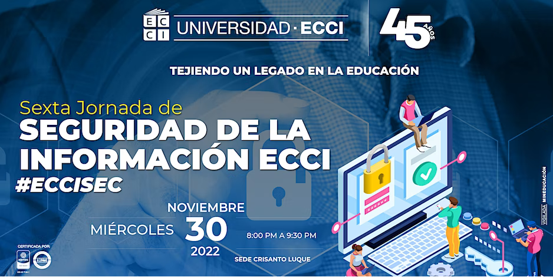
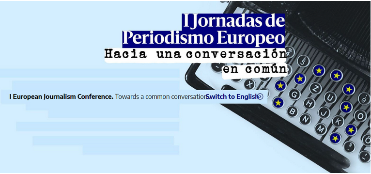
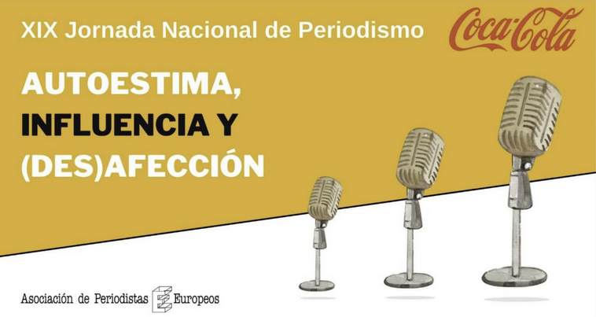

Con el reto de llevar el periodísmo europeo más allá de la ctualidad institucional, las jornadas parten del interés comun de explorar nuevas vías de colaboración como la desarrollada por el CEEDCV y The Guardian, que desde 2019 comparten tanto contenidos, reportajes y noticias diarias, como aprendizajes sobre el modelon de financiación por socios que tienen en común.
XXI Jornada de Periodismo
¿Dónde se realiza?
Salón de actos del COmplejo Misericordia
Plaza de la Misericordia Valencia, 46115 tel.96 351 25 22
¿Cuándo se realiza?
Sádado, 11 de marz, de 9:00 h a 20 h
Domingo, 12 de marzo, de 9:00 h a 14:00 h
Lunes, 13 de marzo, de 9:00 h a 20:00 h
Martes, 14 de marzo, de 9:00 h a 14:00 h
Entrada libre con incripciónprevia
Eventos interesantes

Formación Integral para el periodistade
Televisión - Noviembre 2023

JICUP Periodismo a distancia

Sexta Jornada de Seguridad de la Información

Jornada Internacional

I Jornadas de Periodísmo Europeo

XIX Jornada Nacional de Periodísmo